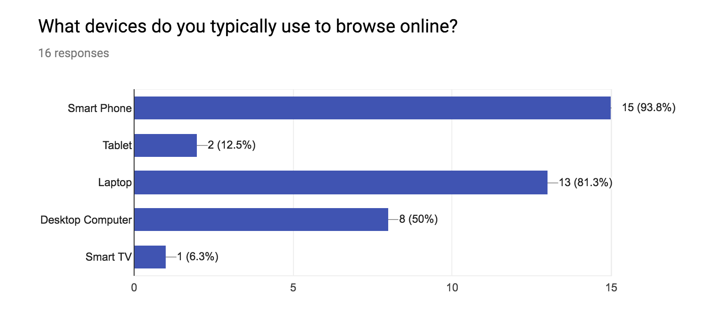
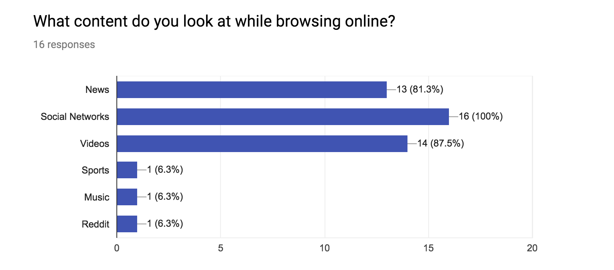
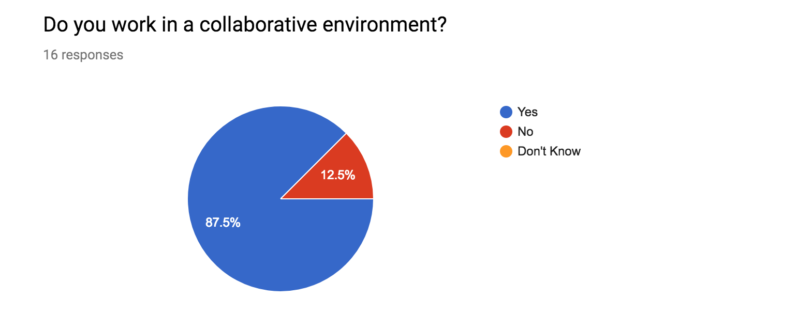
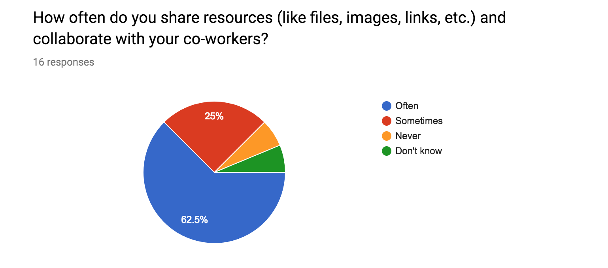
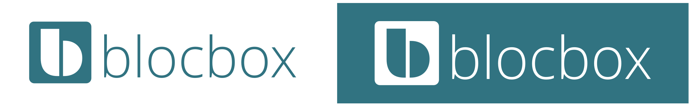
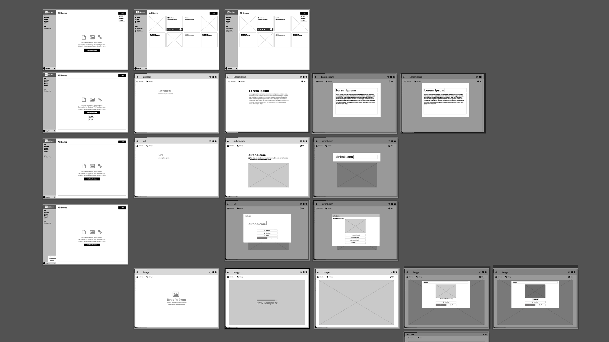
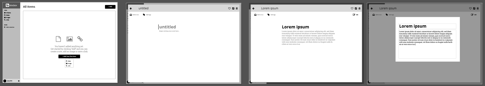
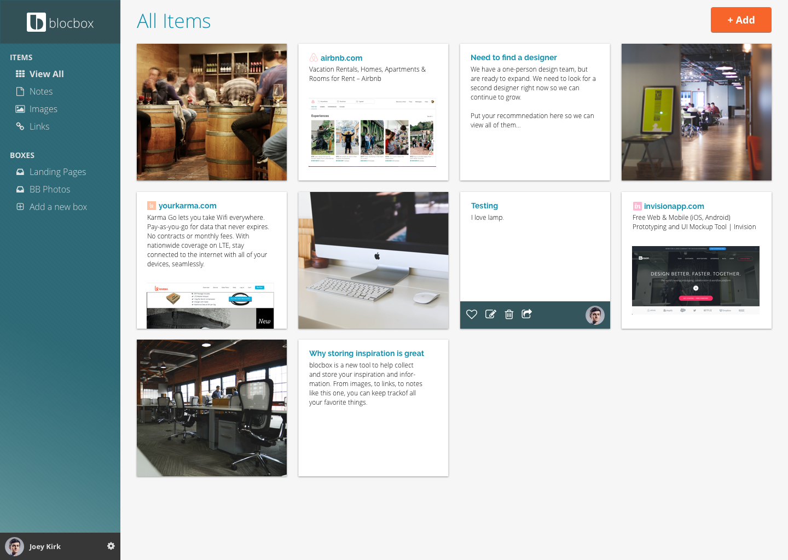
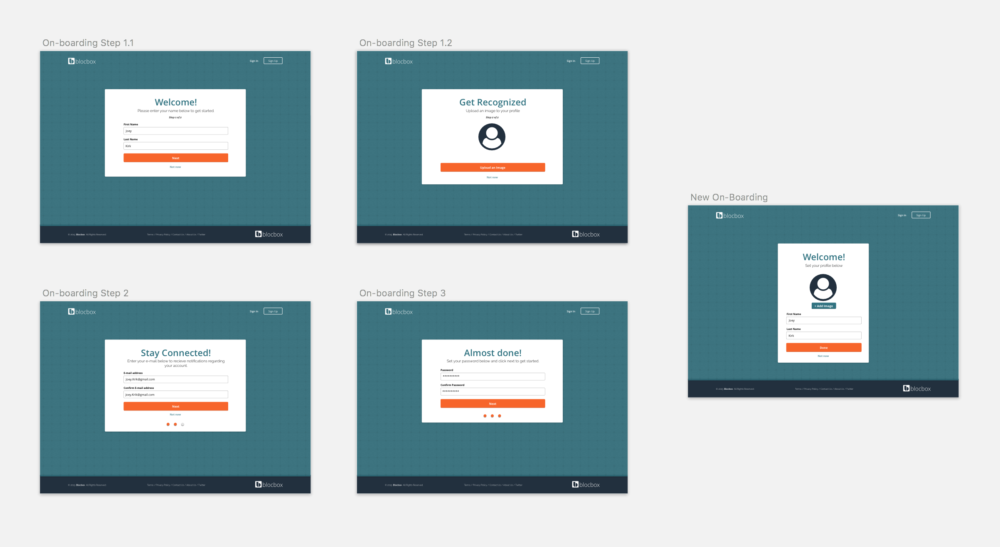
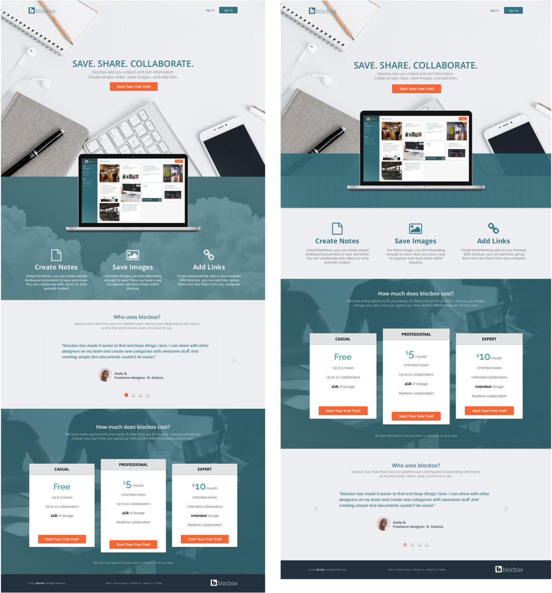

Save, Share and Collaborate with Friends and Family.
The “Personal Computer” has been redefined. No longer is it a heavyweight piece of electronics tethered to your living room floor. It’s now a pocket sized, handheld device that roughly three-fourths of Americans own, according to pewresearch.org. With the access to information becoming easier, the need for alternative data storage has never been more relevant. blocbox offers a cloud based service that allows users to access their files from any device – providing a safe way to save, share, and collaborate.
The Challenge
How can I position blocbox as a valid alternative to powerhouse companies such as Google and Dropbox?
The Solution
Create an intuitive user-interface that promotes organization, an attribute missing in the competition. Position blocbox as an all-inclusive platform for individuals and corporations.
Research
Understanding the User
With research data sourced using Google Surveys from different areas throughout California, I gained valuable insights from a variety of young students and professionals. Early testing helped me position blocbox to directly resolve any user pain-points or concerns before wasting time and resources in development. I wanted to understand the existing Mental Model for cloud services in today’s market, so my questions pertained to:
1. Devices used for browsing the internet
2. User’s internet interactions
3. Social network presence
4. Work environment.
These four questions helped narrow blocbox’s scope and frame what services we should provide for the minimal viable product (MVP).  
The participants own and browse the internet using multiple devices, and 94% of them answered “yes” to signing up with their social media accounts. In response, I created a responsive design that can function across multiple device platforms and streamline the signup and login process by incorporating signups with either Facebook, Twitter or Email.
 87.5% of participants work in a collaborative environment where they often or sometimes need to share resources, such as files, images, and links. In order to compete with Google and Dropbox, these results prove the need for blocbox to be available for corporations and businesses.
Understanding the Competition
Bookmarking links and saving images is a common trend, but organization has room for improvement. Competitors such as Box and Dropbox opt for allowing the user to create their own file directories, but blocbox’s dashboard will incorporate a categorical feature to refine searches for user content. A user will now able to view and scroll through all of their items or filter their dashboard specifically for notes, images or links. View Competitive Analysis
Identifying the User

From the user-survey participants, I reached out to four individuals to interview. These individuals ranged from casual to professional internet use, and provided career diversity to better understand all possible users. Interviewing provided me with some background and insights to why people answered the way they did to the survey.
The common goals were time and efficiency. Users wanted a way to streamline the process of organizing and maintaining their personal files. Therefore, I needed to keep those two goals in mind when designing and developing. View User Personas
Mariko, 28
Research Associate from San Diego, CA
“I would love to have some way to save all of my trip plans, activities, and memories in one location [...]”
Goals
• Consolidate for planning trips
• Simple interface
• Easy Navigation
Frustrations
• Too many categories
• Hard to scan a lot of information quickly
• Inability to localize files and work offline

Ryan, 29
Camera Operator from Oakland, CA
"I would love to have instant messaging [...] would make it easier to collaborate and work with others from a distance”
Goals
• Collaborate on media projects from a far
• Easily manage incoming content
• Quick access to saved media
Frustrations
• Desktop bookmarks don't save on mobile
• UI is not orgnized; request simpler design
• Organizing bookmarked content
Developing User Flows

For the MVP, I developed User Stories to help prioritize the needs of new users and returning users. Additionally, I focused on three main screen interactions:
1. Landing Page - provide product information, pricing, and ability to sign up
2. Signing Up - gathering enough information from the user to start using the product as quickly as possible
3. Dashboard - to assist new users to start using the product, and to organize and layout existing content for returning users
From user interviews, time and efficiency was a main concern, so streamlining the signing up process was a high priority. Due to the large percentage of users using social accounts to sign up, allowing blocbox to accommodate Facebook and Twitter users was also a necessity. Organization was another focal point, since it was a major pain-point for users and a way for blocbox to be competitive. Therefore, the Dashboard’s layout and functionality needed to be intuitive and easy-to-use.
Branding
Developing Brand Identity
Simplicity and transparency were the two driving forces behind the brand design of blocbox. I wanted to create an environment that provided easy navigation to save and view files, while reassuring the user that their valuable content was safe and secure. Additionally, I wanted to incorporating different layered shapes to highlight blocbox’s functionality and diversity. View Logo Process


The typeface Milka was used to simplify the lowercase letter “b” into two different shapes while maintaining readability. The shapes represent the different type of files a user is able to save and share with blocbox. The letterform was cut out of a rounded square box to emphasize the idea transparency of the process, while keeping the concept of data security within blocbox servers intact.

The typeface Open Sans was chosen for its clear, approachable and friendly aesthetic. Raleway was chosen as a complementary sans-serif to pair well with Open Sans, promoting readability and contrast with its wider letterforms. By having having hues of blue, teal, and turquoise, the color palette created a sense of playful professionalism. The bright contrast of the orange was key for having obvious call-to-actions.
Execution
Wireframes
I began creating low-fidelity wireframes using Balsamiq. Balsamiq’s “drag and drop” functionality allowed me to quickly layout and arrange blocbox’s user interface. I refined the low-fidelity wireframes to high-fidelity wireframes using Adobe Illustrator to create the foundation for future design mockups.
Keeping in-line with the two user goals of time and efficiency, I designed blocbox’s interactions to bring up editable modals and lightboxes. By doing so, the need for new windows and load times are decreased, providing the user with a seamless experience. In addition, an auto-save feature was incorporated to assure users that their information will never be lost.
User Interface Designs
Using user flows and wireframes created earlier in the design process, I iterated through multiple design mockups to confirm ease-of-use and user engagement. Using Sketch, I was able to add the typefaces and colorways chosen earlier in the branding stage.

The dashboard was designed to emphasize the content page, while still providing a clear left-navigation and ability to add content. Prior to user-testing, I would go through each screen as a user, double-checking for any confusion or pain-points. The Profile and Account Settings at the bottom left of the screen was difficult to find, so I added a slight gradient to emphasize its location. For blocbox’s goal of organization, the content page is laid out to showcase each item in square boxes, but with enough differences to separate one type from another. The user also has the ability to easily filter what is displayed by using the left-navigation.
User Testing and Redesign
The design mockups from Sketch were uploaded to Invision in order to create a clickable prototype for user-testing. I conducted three in-person usability tests in order to validate my designs. I instructed users to:
1. Look through the Landing Page and give initial thoughts on what the site was for and welcomed any additional comments on layout, visual design, or functionality.
2. Go through the process of signing up as a new user, paying close attention to cursor movements and user activity.
3. Once signed up, to go through the process of adding any type of content (Note, Image, Link).
Although the on-boarding process had a 100% success rate, I did notice that it took users a long time to get to the Dashboard as a new user. I decreased the amount of onboarding screens from 4 to 3, streamlining the process. This change now allows users to start using the product almost immediately.
The blocbox landing page originally incorporated clouds into the design, but results from A/B testing showed that by doing so, the white text on the green became harder to read. To fix this issue, I reduced the block size of green, changed the text color to the same green, and placed it against the light grey background to improve readability.
Learnings
Reflections and Takeaway
Overall, blocbox succeeded in creating an intuitive and responsive cloud based product. Users were able to easily find any information about blocbox and quickly signup to start saving and sharing their files. Developing a SaaS product to fit in today’s market was the biggest challenge. The competitive analysis highlighted a lot of competition, begging the question, what can blocbox offer? I had to rely heavily on the user research to dictate which features were needed and which features were unnecessary. Only then was I able to shape blocbox’s niche in the market space. With that being said, I would have placed more emphasis on the user research aspect of this project. I would have increased the sample size, expanded the diversity to outside of California, and iterate more with user involvement. Given more time, having the constant feedback with users during the prototyping phase is invaluable.